Starting from around mid-2021, when I realized that there won't be proper Visual Scripting in Unity, I decided to start learning C# for Unity. The process was slow, because a lot of time and energy went into my main job.
In the summer of 2022, I decided to create something more meaningful, perhaps even a game, or at least one well-designed game level. I took an old concept as a place to start that my colleague and I had once wanted to implement but left at the stage of abstractly outlined ideas.
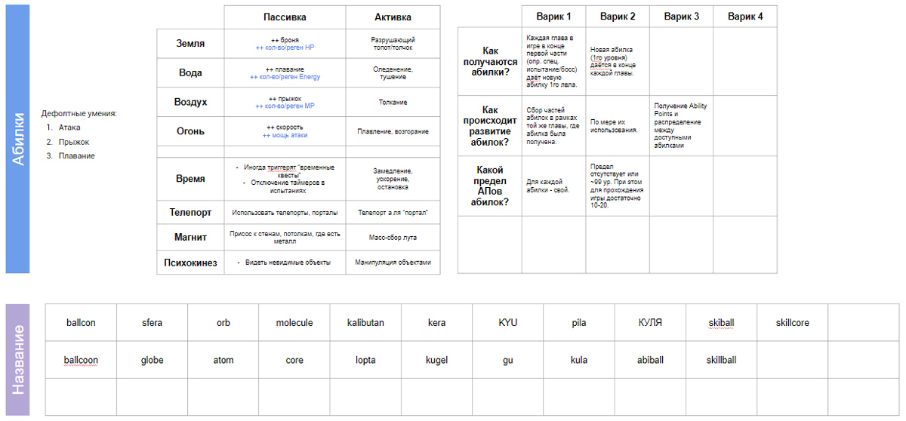
The concept revolved around a spherical character collecting gems (game currency), pearls (which provided different stats), and orbs (which granted abilities). Copies of orbs could be crafted into more powerful ones with higher levels of abilities and randomly generated additional stats.
The plan included implementing specific skills and determining how the gameplay would evolve based on the acquired skills (although not everything was properly documented at that time). The skills were supposed to be granted by orbs that needed to be found or possibly purchased. A certain number of orbs could be activated at once, so it was necessary to determine which orbs to use based on the situation. The number of orb slots would increase as the game progressed.
Overall, the concept lacked originality but was sufficient for my C# practice in Unity.
The «spherical character»
The first step was developing the "spherical character." This involved designing the character itself and its potential animations, followed by transferring them to Unity. Programs such as Photoshop, Substance 3D Painter, and, most importantly, Cinema 4D were used.
Here is how it looked in Cinema 4D:
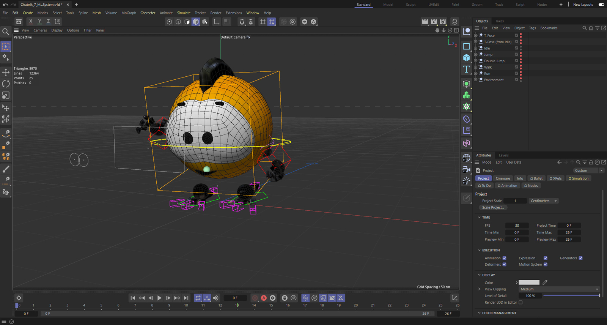
And now in Substance 3D Painter:
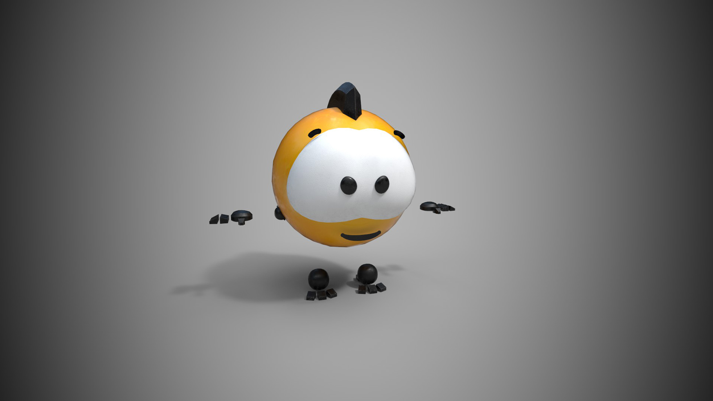
And there are its animations in Cinema 4D (some require adjusting in Unity at this point):
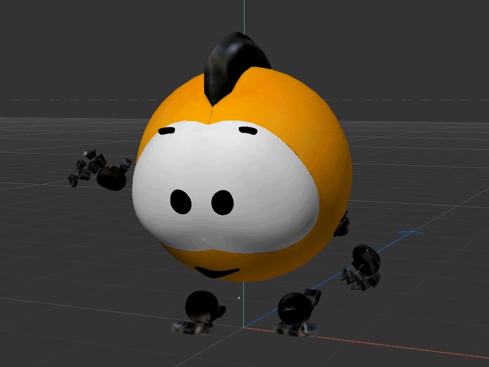
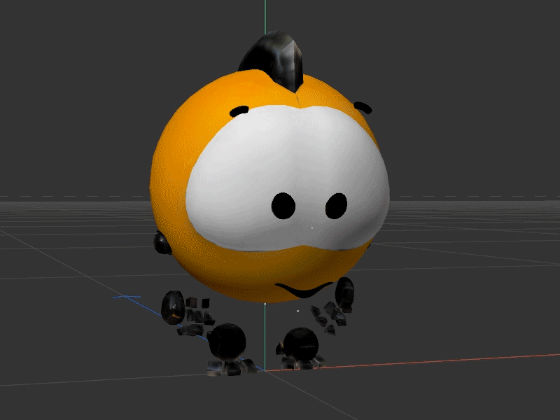
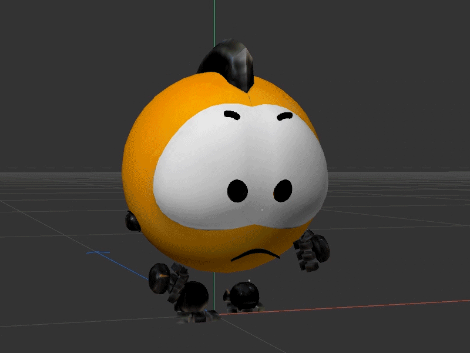
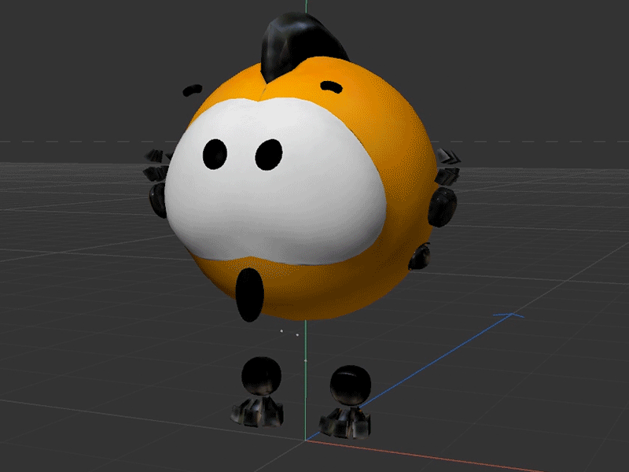
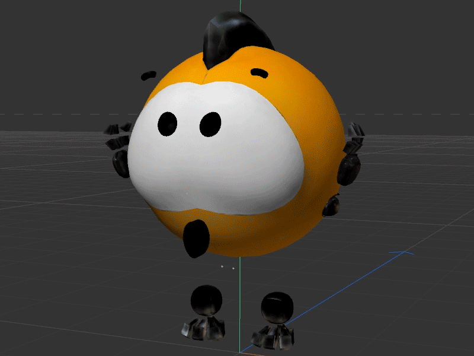
The controls
When the character was more or less ready, I transferred it to Unity and started implementing its controls. The process was long and challenging since everything was done for the first time using C#.
Initially, I created a massive script resembling a skyscraper for the controls. However, later on, I learned from Jason Weimann, a Unity guru, that it is more efficient and practical to separate your code and have each script perform a single task. Taking his advice, I implemented the changes, and it turned out to be a great idea.
Various elements to interact with
Next, I began brainstorming various elements (with which the player could interact) for the potential future game.
I came up with a few: a climbing wall,..
...a lift,..
...a magnet and an anti-magnet,..
...a pusher,..
...a springing pad,..
...a teleport,..
...sliding,..
...a primitive damage system,..
...a primitive inventory system,..
...and, ultimately, a system for displaying the orbs themselves rotating around the character.
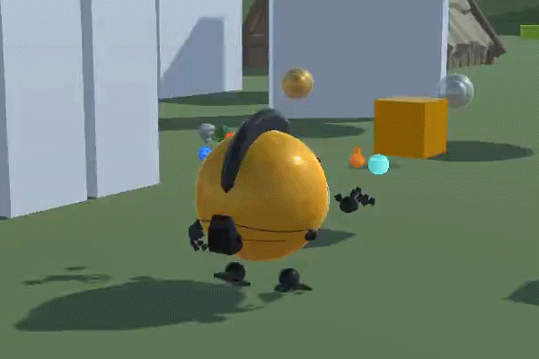
The interface
Before I stopped, my next task was to implement the user interface, which I had previously briefly designed.
The images below are from Photoshop:
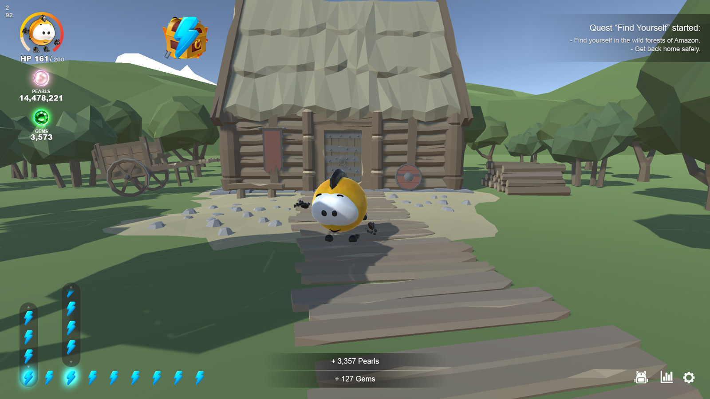
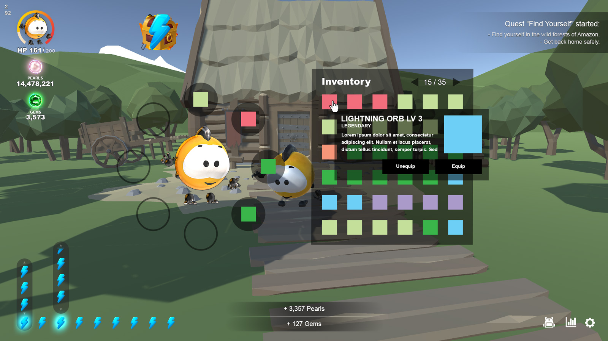
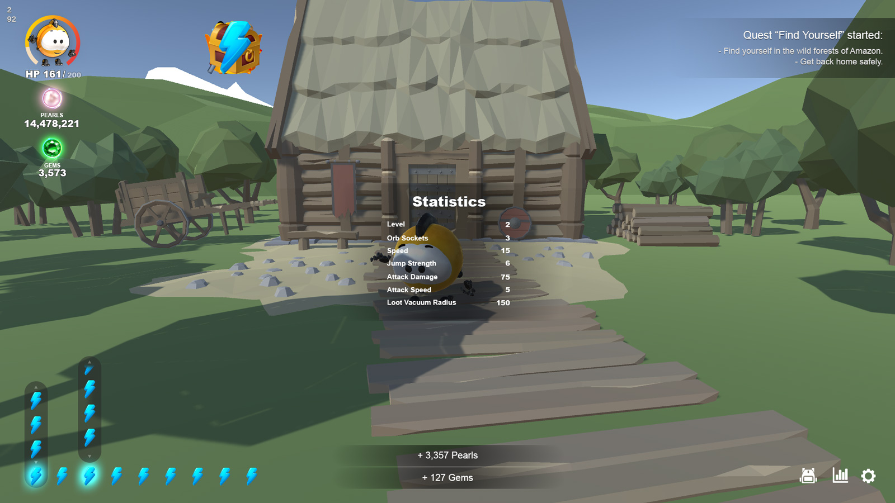
And that’s where I paused this project.
Why paused?
By the end of summer 2022, I paused the development due to life circumstances that required my attention on other things. At the moment, the desire to continue this project remains. Perhaps I will find time for it.
Try it out
You can download and test the results yourself.
Will definitely run on Windows and should also run on Mac and Linux.
There is a folder in the .zip archive called “ChubrikTest”. Just run the shortcut ("Launch...") inside the folder and you’re good to go.